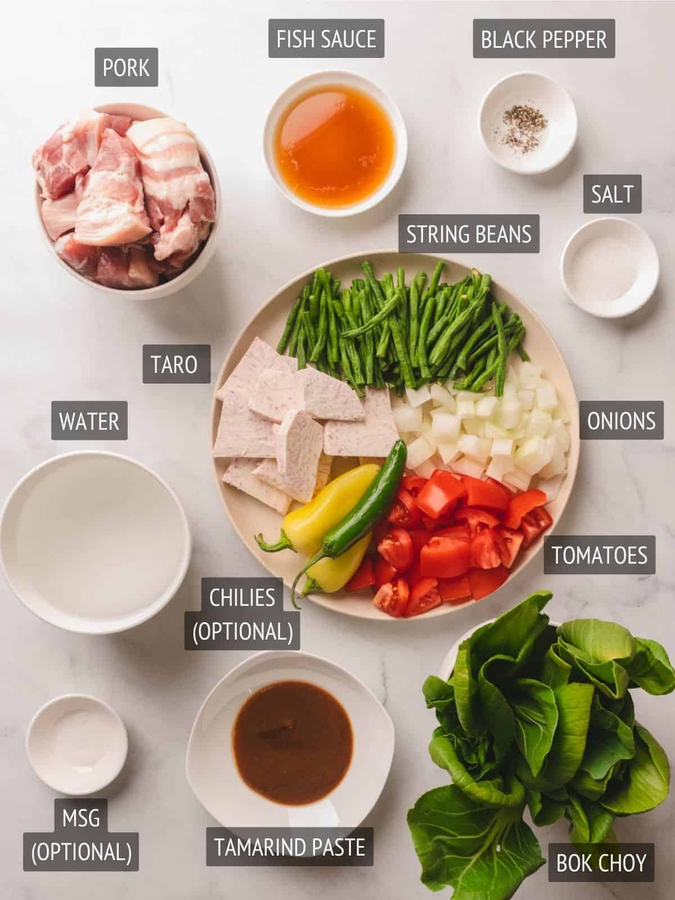

Sinigang na Baboy is a classic Filipino sour soup made with tender pork, fresh vegetables, and tamarind broth. It’s warm, comforting, and best enjoyed with hot steamed rice.
Sinigang na Baboy is one of the most beloved Filipino dishes. Known for its signature sour flavor, it traditionally uses tamarind as the souring agent and includes vegetables like kangkong, radish, and eggplant.

For deeper flavor, simmer the pork longer until very tender. Adjust the sourness by adding more tamarind or balancing with a little water if it becomes too strong.
Sinigang represents the Filipino love for bold and comforting flavors. It is commonly served during family meals and rainy days, bringing warmth and nostalgia to the table.
The sour broth was perfect and the pork was so tender. My family loved it!
Very comforting and authentic. Tastes just like home.
Your Rating
Your Review